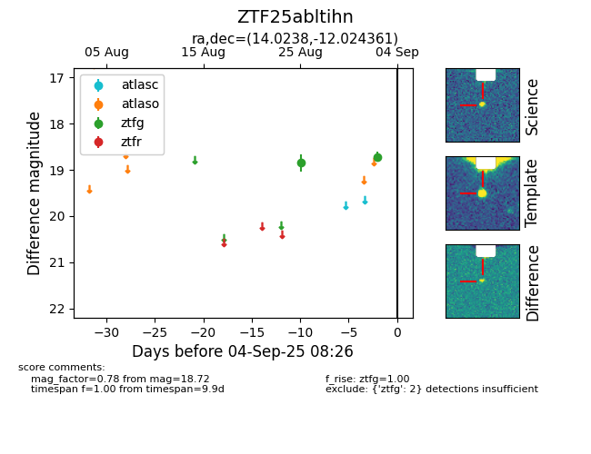

FINK: ZTF25abltihn
Lasair: ZTF25abltihn
ALeRCE: ZTF25abltihn
ZTF25abltihn (ztf,fink)
equatorial (ra, dec) = (14.0238,-12.02436)
galactic (l, b) = (127.2952,-74.85664)

last atlaso=nan, ztfg=18.72
1 atlaso, 2 ztfg detections